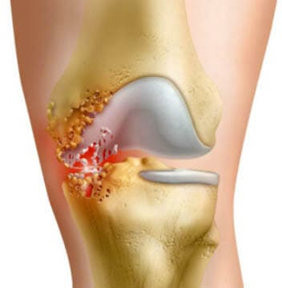

Artrita și artroza: cum să recunoașteți boala și să salvați articulațiile
Aproximativ 30% de oameni din lume suferă de boli articulare. Și în fiecare an, acest număr doar crește. Cum se diferă artrita de artroză? Care este cauza pentru apariția lor? Cum a restabili articulațiile și a scăpa de durere, dacă la o întâlnire cu medic nu ajungeţi în următoarele zile? Mai multe despre aceste și alte întrebări vor spune reumatologul Gheorghe Munteanu.
Artrita - este o inflamație acută a articulațiilor, care provoacă modificări patologice și afectează funcționalitatea acestora. Etapele neglijate trec în cursul cronic. Această boală este, cel mai adesea, expusă la tineri până la 40 de ani.
Artroza (Osteoartrita) - este o boală cronică în care există o "ștergere" a suprafețelor articulare și a capsulei, din cauza începerii deformării. În cazurile avansate - imobilizarea completă a membrelor. Modificările afectează un întreg complex - oasele, ligamentele, meniscul, cartilajele, coajă sinovială. Patologiilor sunt expuse persoanele în vârstă. Cu cât persoana este mai în vârstă, cu atât este mai mare riscul de răspândire a bolii. La vârsta de peste 60 de ani, 90% dintre oameni suferă de osteoartrită.
Aceste două boli rareori apar singure. Atunci când modificările patologice încep în articulație, apare inflamația, care poate provoca dezvoltarea unei forme cronice de artrită. Poate fi o situație inversă: tratamentul artritei nu va produce la 100% de rezultate, iar în locul său vor rămâne schimbări vulnerabile pentru artroză.
Cauzele dezvoltării artritei și artrozei
Bolile apar din motive, care nu coincid în multe privințe.
Simptomele artritei și artrozei sunt foarte asemănătoare:
- senzații dureroase la orice sarcină;
- prezența "zgomotului" atunci când vă mişcaţi;
- umflături.;
- dificultate în timpul mișcării;
- deformarea articulațiilor;
- reacție acută la schimbarea vremii;
- senzație de rigiditate după o lungă perioadă de odihnă sau somn.
Dar există diferențe care ajută medicilor să stabilească diagnostice.
Cum se petrec bolile
Artroza poate fi doar cronică.
Dar artrita are loc într-una din cele două forme: cronică sau acută. Forma acută este mai puțin periculoasă, cronică - duce la schimbări, care nu pot fi afectate. După un timp, articulația își poate pierde complet funcțiile.
Forma cronică de artroză este, de asemenea, periculoasă, deși se dezvoltă lent. În aproape toate cazurile, duce la dizabilități.
Despre tratament și invaliditate
Cel mai adesea, pacienții caută ajutor în a doua etapă a bolii, iar unii sunt deja mai aproape de a treia. Acest lucru este valabil mai ales pentru persoanele în vârstă, care sunt obișnuiți cu afecțiuni și consideră că apar schimbări cu articulațiile legate de vârstă.
România are aproximativ o jumătate de milion de pacienți cu artroză, deși acest număr este de fapt aproape de 1 milion, deoarece mulți pacienți suferă de osteoartrită și nu se plâng.
Artrita și artroza sunt periculoase, deoarece în stadiile incipiente se dezvoltă aproape fără simptome. Și cu cât diagnosticul se întâmplă mai devreme, cu atât sunt mai multe șanse de a salva articulațiile bolnave.
Din păcate, medicina în Europa, și în special în România, în acest sens are dezavantajele sale. Datorită asigurării, serviciile unui medic într-o clinică de stat ne costă de 2-3 ori mai ieftin, dar chiar și pentru o consultare obișnuită cu un terapeut, este aproape imposibil să ajungem în 2-3 zile. Și recepția unui specialist mai îngust poate avea loc în general în câteva săptămâni. În acest timp, boala poate trece cu succes de la o etapă la alta.
Despre rezolvarea problemei
În clinicile private, cozile sunt mult mai mici decât în cele publice, deci este mult mai ușor să ajungeți la o întâlnire cu un specialist. Dar, din păcate, nu toată lumea are posibilitatea de a plăti pentru serviciile lor.
În situații critice, aș recomanda să luați monodoze . Acest mijloc este confirmarea faptului că tehnologia nu stă pe loc. Acesta este creat printr-o formulă smart eficientă, iar componentele sale se completează perfect. Personal, l-ași comanda, doar pentru că există condroitină, glucozamină (așa-numitele condroprotectoare), mangan, acid hialuronic, metilsulfonilmetan, extract de filipendulă ulmaria și vitamina C, care este necesară pentru sinteza colagenului. Ele contribuie la restabilirea articulației și nu permit bolii să progreseze și au, de asemenea, un efect analgezic.
Este demn de remarcat faptul că compoziția este sigură chiar și pentru cei cu ulcer gastric și probleme cu sistemul cardiovascular.
Ca și în cazul meu, aceasta este o soluție excelentă pentru reabilitarea articulațiilor la domiciliu.
Comentarii
Laurentia
În timpul iernii, artroza mea sa înrăutățit, iar la întâlnire cu medic, nu am mai avut câteva săptămâni. Am comandat . În timpul cursului, durerea a început să scadă. Cu siguranţă recomand!
Pertică
Trăiesc cu durere constantă. Am artrită reumatoidă. Nu pot să joc fotbal, să alerg, să merg cu bicicleta... poate dacă aș fi fost diagnosticat mai devreme
Manole
Informație de folos. Înainte de aceasta, nu am văzut diferența dintre artrită și artroză
Stelian
Am citit articolul și am comandat . Serviciu plăcut, parcela a venit în termen de 3 zile. Numai am început cursul, așa că nu pot spune nimic încă.
Carolina
Listele lungi de așteptare și lipsa personalului sunt probleme uriașe a medicinei moderne!
Margareta
Să beai - o plăcere. Monodozele sunt ambalate convenabil. Singura problemă pentru mine a fost să nu uit să le beau, așa că am pus o reamintire pe telefon
Tudorica
Am avut planuri mari de pensionare, dar artroza a stricat totul. După ce terapia hormonală nu ma ajutat, am început să mă tem, ca să nu devin o povară pentru copii. O lună am luat și în viața mea au început să se întoarcă culori luminoase. Acum, din nou pot să mă mișc normal și să-mi planific călătoria în Asia.
Vasilica
Bunica are artroza, ea nici nu poate mânca singură și se mișcă numai pe scaun cu roţi. Mi-e teamă că să nu apară şi la mine așa ceva.
Nanica
Da, du-te la doctori...
Ileana
Oh, aceste articulații! Vara nu este nimic, iar când se răcește - pur și simplu nu există viață
Ilona
Condroprotectorii au un efect de lungă durată - nu așteptați un efect momental. Mai mult decât atât, cu cât le luați mai mult, cu atât efectul este mai bun
Jana
Invidiez persoanele, care nu au probleme cu articulațiile
Stela
Te susţin @Ilona! Dar condroprotectorii, inclusiv același , nu maschează simptomele, ci acționează asupra cauzelor durerii. Cred că așteptarea merită.
Cristalina
Sunt sincer recunoscătoare, pentru persoanele care au inventat monodozele ! Viața mea înainte de el a fost puţin activă și plină de durere. Noua " eu " este o persoană radical diferită!